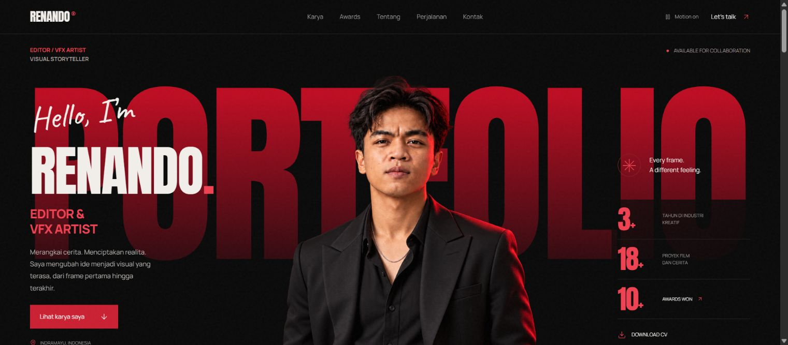
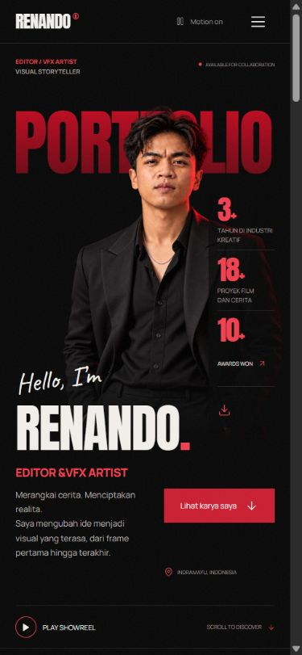

GET THIS
TEMPLATE.
Copy the prompt, paste it into any AI coding agent, and it rebuilds this exact portfolio from the registered source. Then add your photo and instructions.


How to use
- Copy prompt and paste it into Codex, Claude Code, Cursor, or similar.
- Under the prompt, write what you want: "My name is …, here is my photo, my projects are …, accent colour blue."
- The agent fetches the exact source, builds it, swaps your content, and checks it in the browser.
- Host the
index.htmlandAsset/folder anywhere static.